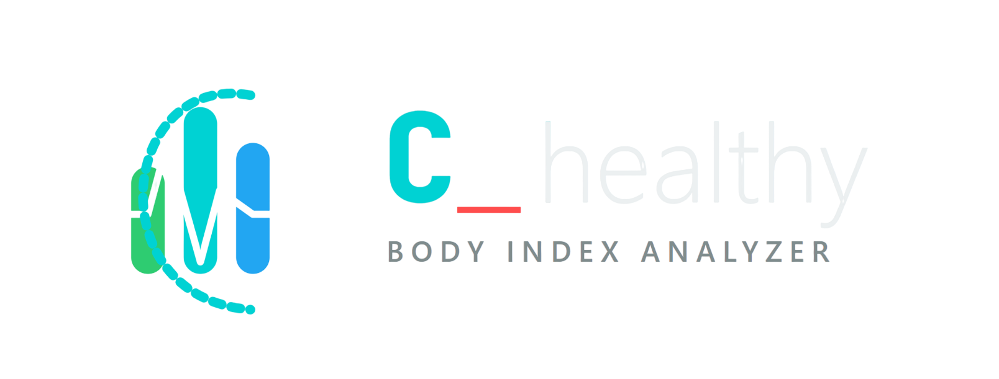
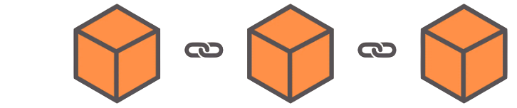

Nơi nhóm mình chia sẻ các dự án mã nguồn mở, gồm những dự án tiện ích, thư viện Python và các thư viện header-only cho C++
Mỗi dự án là một điểm dừng của chuyến tàu trên cùng một quỹ đạo

Thư viện Python tính các chỉ số sức khỏe cơ thể: BMI, BMR, TDEE, WHR, LBM và nhiều chỉ số khác chỉ trong một dòng lệnh.

Xây dựng blockchain bằng C++ với mạng ngang hàng (P2P) giữa các node, mã hóa RSA, đào block, xác thực giao dịch và hệ thống ghi log.